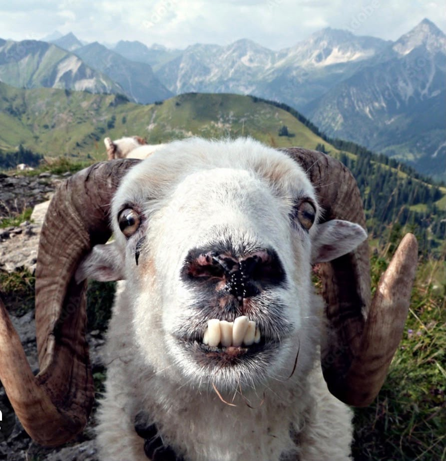

Exklusiv · Die Ziegen-Affäre
2 Uhr nachts: Willige Ziege jagt jungen Mann – Unterhose bis heute verschwunden

Er wollte nur kurz raus zum Pinkeln. Sie wollte deutlich mehr. Gegen 2 Uhr nachts verlässt ein junger Mann die Garagenparty – und trifft unter einer Laterne auf die Ziege. Zeugen beschreiben ihren Blick als „eindeutig". Sie scharrt einmal mit dem Huf. Dann trabt sie los. Direkt auf ihn zu.
Was folgt, ist die schnellste Runde, die je ein Mensch mit offener Hose um eine Lagerhalle gelaufen ist. Doch die Ziege ist schneller. Am Zaun holt sie auf – und erwischt mit den Zähnen den Bund seiner Unterhose. Es kommt zum Gerangel. Die Hose reißt. Die Unterhose verschwindet mit der Ziege in der Nacht. Sie wurde bis heute nicht gefunden.
„Er hat sich nicht besonders gewehrt"
Und hier beginnt der eigentliche Skandal. Denn Augenzeugen wollen beobachtet haben, dass der junge Mann beim Gerangel am Zaun – nun ja – auffällig wenig Gegenwehr zeigte. „Er hätte längst weg sein können", sagt einer, der von der Garage aus alles sah. „Er ist aber geblieben. Die beiden haben sich angeschaut. Da war was."
„Ich habe viel gesehen in dreißig Jahren Nachtdienst. Aber noch nie zwei, die sich nach so einer Verfolgungsjagd so lange in die Augen geschaut haben."
Nachtwächter, seitdem in Therapie
Der junge Mann bestreitet alles – allerdings mit einem Grinsen, das Ermittler als „nicht hilfreich" einstufen. Auf die Frage, was zwischen ihm und der Ziege gelaufen sei, sagte er wörtlich: „Wir sind nur Freunde." Auf die Nachfrage, warum die Ziege dann seine Unterhose habe, sagte er nichts mehr. Sein Kumpel auf dem Beifahrersitz grinst seit Stunden.
„Die Ziege gilt weiterhin als flüchtig. Die Unterhose gilt als Beweisstück. Der Rest geht uns ehrlich gesagt nichts an."
Polizeisprecher, sichtlich fertig mit dem Tag
Chronologie einer Anbahnung
- 02:01Erster Blickkontakt unter der Laterne. Sie scharrt mit dem Huf. Er fühlt sich geschmeichelt. Erster Fehler.
- 02:03Er: „Ey, was willst du?" Die Ziege zeigt es ihm lieber.
- 02:04Verfolgungsjagd. Zeugen sind sich uneins, wer hier wen jagt.
- 02:09Gerangel am Zaun. Die Unterhose wechselt die Besitzerin. Er wehrt sich „eher symbolisch".
- 02:14Die Ziege verschwindet mit der Beute. Letzter Blick über die Schulter. Er winkt. WARUM WINKT ER?
- 02:31Rückkehr zur Garage, ohne Unterhose, mit Grinsen. Erzählt „nichts Besonderes". Glaubt ihm keiner.
Das Beweisstück an der Lippe

Bleibt die Frage nach der kleinen Blessur an seiner Oberlippe, die am Morgen danach fachmännisch verpflastert war. Er sagt: „Der Zaun." Die Rechtsmedizin sagt: „Vereinbar mit einem Zaun. Vereinbar aber auch mit ziemlich allem anderen, was nachts um zwei so passiert." Die Ziege war für eine Stellungnahme erneut nicht zu erreichen. Sie lässt über Dritte ausrichten, sie äußere sich „grundsätzlich nicht zu Privatem".
Fahndungsaufruf
Gesucht: Ziege, Hörner, markantes Gebiss, eindeutige Absichten. Zuletzt gesehen an der Haltestelle „Gewerbepark Nord", eine Unterhose im Maul.
Warnhinweis: Nähern Sie sich dem Tier nicht mit offener Hose.
☎ 0800 / ZIEGE-00 (kostenlos, aber sinnlos)